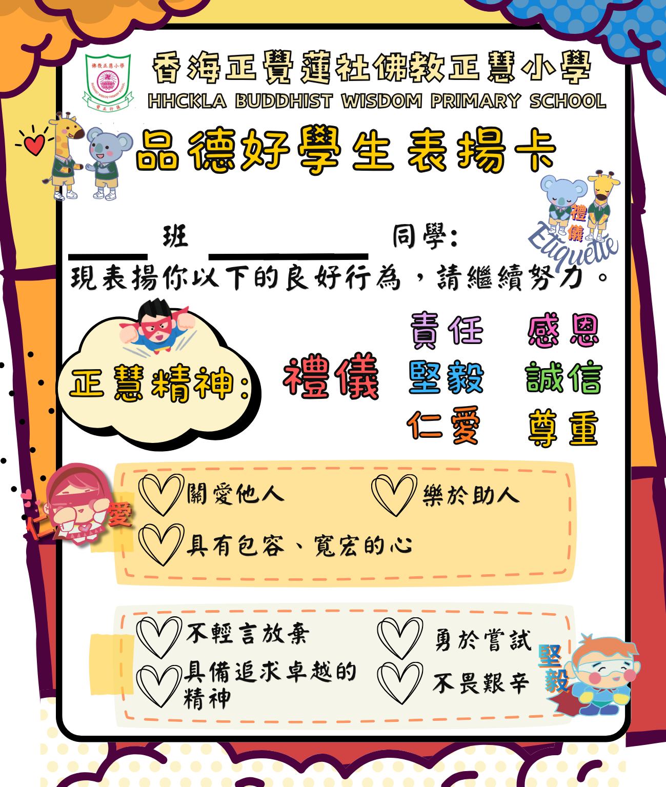

12小時與24小時報時制
1. 睇雙圈時鐘 ➔ 2. 輸入轉換時間 ➔ 3. 按「檢查答案」換獎勵卡！
🏆 答對次數：
0
次
🎁 查看獎勵卡
第 1 步
選擇練習模式：
🕒 1. 12小時 ➔ 24小時
📟 2. 24小時 ➔ 12小時
⚠️ 3. 中午與午夜陷阱
✏️ 4. 自訂題目
🎨 選擇圖解工具：
🕰️ 內外雙圈時鐘
📏 24小時時間尺
✨ 施展 +12 / -12 魔法動畫
🎲 換下一題
🕰️ 內圈：上午 (0~11) ｜ 外圈：下午 (+12)
☀️ 上午時段
💡 觀察口訣：
上午不變（補 0），下午時數 + 12！
👁️ 外圈數字提示：開
🎉 太棒了！時間轉換完全正確！
👏 表現好出色！可以向老師換取一張獎勵卡！

🏅 品德好學生表揚卡 (1.png)
（請確保 1.png 與此網頁放在同一個資料夾內）
✨ 太好了！繼續挑戰下一題